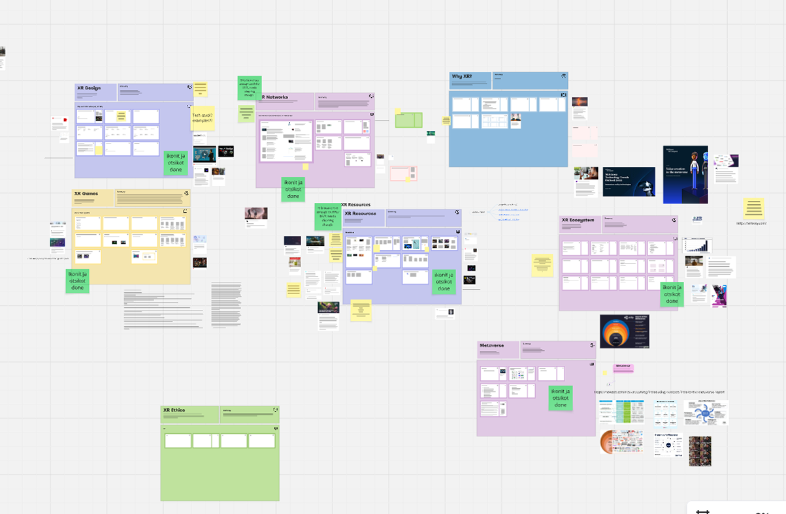
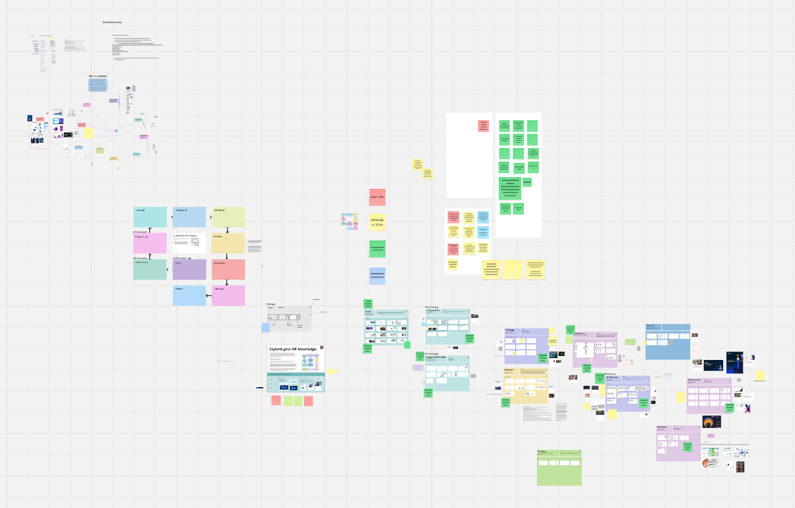

Helsinki XR Center
Team Lead
UX/UI
2024
I worked as the team lead in a project focused on updating an existing XR Mindmap tool to improve usability and overall user experience.
We conducted benchmarking of both training organizations and existing mindmap platforms to explore different approaches to digital learning tools. In addition, we reviewed the client’s existing material to assess its structure and usability.
Based on our findings, we developed a more user-friendly version of the XR Mindmap using Miro, reorganizing the content into a clearer and more accessible format.
The tool was designed for a broad audience, including both XR professionals and beginners such as students, with the goal of making information easy to navigate and quickly digestible.
XR Mindmap → Expand Your XR Knowledge-tool
Tools: Miro, FigJam

